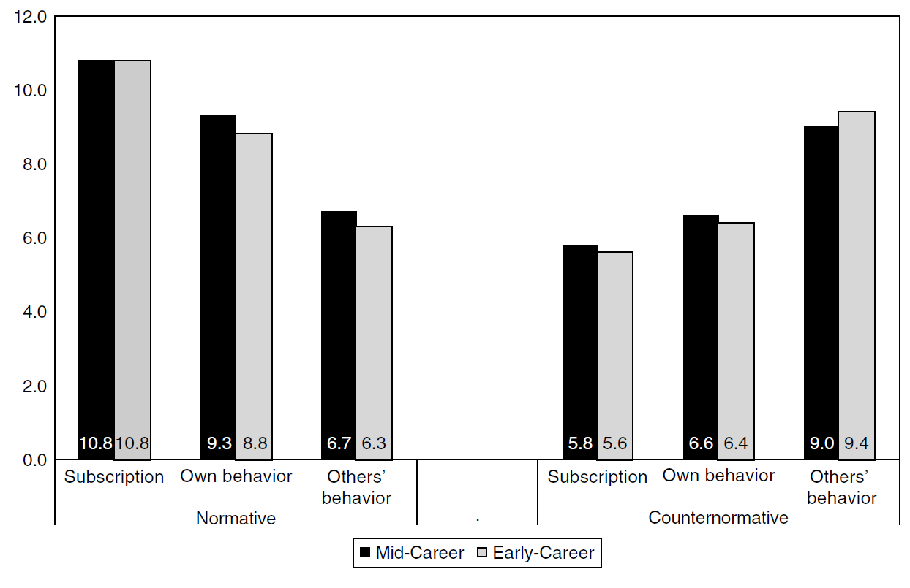

16 Confirmation Bias and Organized Skepticism
I cannot give any scientist of any age better advice than this: The intensity of the conviction that a hypothesis is true has no bearing on whether it is true or not. The importance of the strength of our conviction is only to provide a proportionately strong incentive to find out if the hypothesis will stand up to critical evaluation. Medawar, 1979, Advice to a Young Scientist
Being a scientist is a rewarding but challenging career path. Doing science can lead to the intellectual satisfaction of making discoveries or increasing our understanding about important questions, the rewarding feeling of contributing to solutions to important problems society faces, interacting with stimulating colleagues, recognition from peers and the general public, as well as the possibility of a decent income if you become an internationally sought-after expert in your field. At the same time, it can be a difficult career that requires hard work, uncertainty about your future career, times where you have little success in advancing your knowledge, experiencing competitiveness or even animosity towards other scientists, and a feeling of pressure to achieve goals (National Academy of Sciences et al., 2009). Although science is a collective endeavor, scientists often has a strong personal commitment to their work. They are motivated to succeed, and disappointed if their work is not successful.
In his book “Modern science and the nature of life” William Beck (1957) writes:
Each successive step in the method of science calls for a greater emotional investment and adds to the difficulty of remaining objective. When the ego is involved, self-criticism may come hard (Who ever heard of two scientists battling to prove the other right?). One has always a vested interest in the successful outcome and, whether we enjoy admitting it of not, each of us feels the pressure to succeed, to blaze ‘new trails’ perhaps before we have mastered the old, to remain productive and therefore admired, to embark obsessively (as did Sigmund( upon a romantic crusade towards epic truth. It is apparent, therefore, how latent neurotic tendencies may impinge upon and distort the clean mandates of scientific method and may generate error, unrealistic values, anxiety, and – let’s face it, since science is done behind closed doors – dishonesty. Because scientists are human and science is not, as in all fields the thin thread of integrity is sometimes strained to break.
The recognition that science is a human activity has not gone unnoticed. In 1620 Francis Bacon wrote the book ‘Novum Organum’ (or ‘New Method’) which provided a first description of a modern scientific method, with a focus on empiricism and inductive reasoning. Bacon already realized more than 400 years ago that people are not passive observers, and provides a very early description of what we would now call confirmation bias:
The human understanding, when any proposition has been once laid down (either from general admission and belief, or from the pleasure it affords), forces everything else to add fresh support and confirmation; and although most cogent and abundant instances may exist to the contrary, yet either does not observe or despises them, or gets rid of and rejects them by some distinction, with violent and injurious prejudice, rather than sacrifice the authority of its first conclusions. It was well answered by him who was shown in a temple the votive tablets suspended by such as had escaped the peril of shipwreck, and was pressed as to whether he would then recognize the power of the gods, by an inquiry, But where are the portraits of those who have perished in spite of their vows? All superstition is much the same, whether it be that of astrology, dreams, omens, retributive judgment, or the like, in all of which the deluded believers observe events which are fulfilled, but neglect and pass over their failure, though it be much more common. But this evil insinuates itself still more craftily in philosophy and the sciences, in which a settled maxim vitiates and governs every other circumstance, though the latter be much more worthy of confidence. Besides, even in the absence of that eagerness and want of thought (which we have mentioned), it is the peculiar and perpetual error of the human understanding to be more moved and excited by affirmatives than negatives, whereas it ought duly and regularly to be impartial; nay, in establishing any true axiom the negative instance is the most powerful.
In a classic paper on confirmation bias, Nickerson (1998) defines confirmation bias as the seeking or interpreting of evidence in ways that are partial to existing beliefs, expectations, or a hypothesis in hand. The human factors that influence (or bias) scientific knowledge generation received relatively little attention from philosophers of science, even though it would be naïve to believe that scientists objectively pursuit the truth. As the philosopher of science Chang (2022) writes:
There is a tendency in the philosophy of science to present the scientist as a ghostly being that just has degrees of belief in various descriptive statements, which are adjusted according to some rules of rational thinking (e.g., Bayes’s theorem) that remove any need for real judgement. Whatever does not fit into this bizarre and impoverished picture, we tend to denigrate as matters of ‘mere’ psychology or sociology.
The sociologist of science Robert Merton (1942) believed that “Four sets of institutional imperatives - universalism, communism, disinterestedness, organized scepticism - comprise the ethos of modern science.” Universalism means that “The acceptance or rejection of claims entering the lists of science is not to depend on the personal or social attributes of their protagonist”. Communism means that “The substantive findings of science are a product of social collaboration and are assigned to the community”. Scientist do not own their theories – at best they receive recognition for developing their ideas. As Merton writes “Secrecy is the antithesis of this norm; full and open communication its enactment.” Disinterestedness occurs not on the individual level – a scientist can have a passions and motivations – but on the institutional level. The institution of science has disinterestedness as a norm, which means that claims should be truthful, and not spurious. According to Merton, scientists are subject to rigorous policing – scientists are accountable to their peers, who will check their work, and therefore only disinterestedness will lead to claims that survive scrutiny. And finally, organized skepticism means the “scrutiny of beliefs in terms of empirical and logical criteria”. Claims are only accepted after they have survived scrutiny by peers.
As with any norm, not all individuals subscribe to all norms, and more importantly, not everyone behaves in line with norms (at least not all the time). For example, a common norm is to be truthful when you talk to others. Yet, even if we subscribe to the norm to be truthful, we might not always tell the truth ourselves. And we might believe others lie even more often than we do. This is exactly the pattern that Anderson and colleagues (2007) found in a survey among US scientists (see Figure 16.1). Scientists subscribed to Mertonian norms (the maximum possible score is 12). They also admit not to always follow these norms in their own behavior, and they believe others follow these norms even less. The pattern is the opposite for counternorms (e,g, secrecy, self-interestedness, etc.).
When asked, scientists don’t see members of their own profession as being objective at all. In an interesting series of interviews with scientists involved in the Apollo moon landing, Mittroff (1974) concludes: “Every one of the scientists interviewed on the first round of interviews indicated that they thought the notion of the objective, emotionally disinterested scientist naïve”. His article is full of excellent quotes that illustrate this conclusion, such as:
Scientist B: The uninvolved, unemotional scientist is just as much a fiction as the mad scientist who will destroy the world for knowledge. Most of the scientists I know have theories and are looking for data to support them; they’re not sorting impersonally through the data looking for a theory to fit the data. You’ve got to make a clear distinction between not being objective and cheating. A good scientist will not be above changing his theory if he gets a preponderance of evidence that doesn’t support it, but basically he’s looking to defend it. Without [emotional] commitment one wouldn’t have the energy, the drive to press forward sometimes against extremely difficult odds. You don’t consciously falsify evidence in science but you put less priority on a piece of data that goes against you. No reputable scientist does this consciously but you do it subconsciously.
Scientist G: Every scientific idea needs a personal representative who will defend and nourish that idea so that it doesn’t suffer a premature death.
These interviews reveal that scientists believe a commitment to a specific idea or theory is a necessity if you want to motivate yourself to keep exploring an idea, even when the going gets tough, or to make sure an idea is not too easily dismissed. In other words, confirmation bias could even have a positive role to play.
Although there are now philosophers of science who recognize that science is a social process (Douglas, 2009; Longino, 1990), most researchers who study human factors in scientific research come from fields such as psychology of science, sociology of science, science and technology studies, or meta-science. Researchers in these fields try to describe ways in which researcher fall victim to confirmation bias, analyze the underlying mechanisms that cause confirmation, and propose interventions to reduce the effect of confirmation bias in science.
For example, Mahoney (1979) reviewed the literature related to the common textbook description of scientists as objective, rational, open-minded, intelligent, acting with integrity, and openly and cooperatively sharing knowledge, and concluded:
- The scientist is not immune to perceptual biases and is frequently quite emotional in response to technical and epistemological matters.
- It remains to be demonstrated that scientists are more logical than nonscientists in the conduct and interpretation of their work.
- The scientist may sometimes be unreceptive to relevant data and – particularly in the case of theorists - prone to hasty speculation and dogmatic tenacity.
- Although scientists generally have higher IQs than non-scientists, it remains to be demonstrated that small intellectual differences have a substantial impact on professional competence or contribution.
- Reports of data fabrication and experimenter bias suggest that such phenomena are neither rare nor trivial.
- Scientists tend to be secretive and suspicious until they have established a public priority claim to their work; disputes over personal credit and priority frequently result in bitter arguments.
So why does science still seem to work, given all these all too human limitations that scientists display? One way to look at science is as a method that groups of people use to make claims while implementing procedures that aim to reduce the role of confirmation bias. Although science encompasses much more than a set of rules to reduce confirmation bias, many practices, such as peer review, performing independent replication studies, and specifying the alpha level of a test before looking at the data, can only be understood from this perspective. Some scientists consider active attempts to resist confirmation bias an essential feature of good science. As Feynman (1974) writes: “The first principle is that you must not fool yourself - and you are the easiest person to fool.”
16.1 Confirmation bias in science
Wason (1960) created a simple task to examine how people test hypotheses. You first get a series of 3 numbers. Your task is to develop a hypothesis about the underlying rule that has generated these three numbers. You can then test the underlying rule by suggesting a new set of three numbers, and you will be told if the set of three numbers follows the rule you are supposed to discover, yes or no. Let’s give it a try. I will give you the following 3 numbers: 2, 4, 8.
You can think of a rule that has generated this set of three numbers. To test your rule, you can provide a new set of three numbers. Take a moment to think of which 3 numbers you would want to suggest, and then you will hear if the numbers follow to the rule, or not. Let’s say you have decided to suggest three numbers such as 3, 6, 12, or 5, 10, 20. These numbers are in line with a rule ‘the first numbered is doubled, and then doubled again’. If you would have suggested three numbers like this, you would have heard they follow the rule you were supposed to discover. However, had you provided the three numbers 2, 3, 9, you would also have received the answer that this set of three numbers follows the underlying rule. The rule to be discovered was ‘three numbers in increasing order of magnitude’.
If you are like most people who complete the Wason task, you tested a set of three numbers that would confirm the rule you had in mind. Having the rule confirmed tells you your rule might be correct, but that many other rules can also be correct. Testing a set of three numbers that you predict would not follow the rule, such as 1, 2, 3, and learning this set of three numbers actually follows to underlying rule, tells you with certainty that the rule you had in mind is incorrect. Confirming and falsifying predictions is both important, but people seem in general less inclined to try to prove themselves wrong. This knowledge about human psychology is useful to have, because we can use it to develop methods and procedures to counteract negative effects that arise from our inclination to want to confirm our hypotheses.
In his paper titled “Pathological Science” Langmuir (1989) discusses two examples of confirmation bias in physics. The first example is the Davis-Barnes effect, which described unexpected behavior of alpha particles interacting with electrons in a magnetic field, and the second example is N-rays, a hypothesized form of radiation inspired by the discovery of X-rays, described by French physicist Blondlot in 1903, and initially confirmed by others physicists. In both cases skepticism of the initial findings led other scientists to perform an on-site inspection of the experiment being performed, who concluded the results were due to observer error. As Langmuir writes: “These are cases where there is no dishonesty involved but where people are tricked into false results by a lack of understanding about what human beings can do to themselves in the way of being led astray by subjective effects, wishful thinking or threshold interactions.”
There are also cases where dishonesty is involved. Sometimes scientists commit outright scientific fraud, and fabricate data, but it is not always clear where to draw the dividing line between intentional and unintentional bias. For example, in a famous case of the geneticist Gregory Mendel who studied heredity in pea plants. Later re-analyses of his data by the statistician and geneticist Ronald Fisher revealed that his results are implausibly close to predicted outcomes (Fisher, 1936). Although there is agreement that the results are statistically implausible, it is difficult to pinpoint a cause. The statistical implausibility could be due to incorrectly reporting details of the experiment, classification errors, or even an assistant feeling some pressure to report results in line with expectations (Radick, 2022). One reason to embrace open science practices is so that the research community will benefit from greater transparency about what happened in situations where researchers raise doubts about the validity of results.
It is not just scientists who fabricate data – students do this as well. In an incredibly interesting paper documenting attempts to perform a replication study as a class assignment, Azrin and colleagues (1961) found that many of the students fabricated all or part of the data because following the experimental procedure was too difficult. In one class experiment, only a single student reported having trouble performing the experiment as it was supposed to be carried out. When students discussed the experiment later during the course, and the honest student admitted that they had tried to perform the experiment 6 times, but failed and gave up, 8 other students suddenly also admitted that they had problems following the experimental procedure, and had deviated substantially from the instructions. Even worse, in another class assignment replicating the same study, when one student asked “I’m having trouble with my experiment; can you tell me how you did yours?” 12 out of 19 students questioned this way readily admitted to fabricating data to this fellow student.
We can imagine many reasons why students would fabricate data, such as not wanting to admit they failed at following experimental instructions and feeling stupid, or simply fabricating data to not have to do any actual work. In a class I co-taught with a colleague many years ago students also fabricated data. We had asked them to collect data for a short survey from 10 friends of family members, just so that they would have real data to analyze during the course. At the time we did not realize the survey students created (also as part of the course) end up being much longer than a few minutes, nor did we realize that many students found it unpleasant to have to ask 10 people for a favor. None of the students told us they had difficulties following the instructions – instead many of them fabricated surveys until they could hand in 10 surveys. As teachers, we had obviously asked our students to complete an unreasonable task. But had a student honestly told us about the difficulty they experienced collecting the data, we would have adjusted the assignment (as we did the year after). The code of conduct for research integrity applies to staff and students. Whenever you feel pressure and are considering to violate the code of conduct (for example by fabricating data), don’t! Instead, bring the problem to the attention of a teacher, or a confidential advisor if you are more comfortable talking to someone else.
As discussed in the section on questionable research practices, sometimes researchers opportunistically use flexibility in their research methods to increase the probability of finding support for their hypotheses. It is often unclear to which extent researchers are aware of how problematic this behavior is, and therefore it is difficult to establish when this behavior is simply dishonest, and when it is bias through a lack of understanding. These practices have been known for a long time. Kish (1959) already mentioned as one misuse of statistical tests: “First, there is”hunting with a shot-gun” for significant differences. […] The keen-eyed researcher hunting through the results of one thousand random tosses of perfect coins would discover and display about fifty “significant” results (at the P = .05 level). Perhaps the problem has become more acute now that high-speed computers allow hundreds of significance tests to be made.”
Barber (1976) reminds us that “Since experiments are designed and carried out by fallible individuals, they have as many pitfalls as other human endeavors” and provides an extensive overview of ways researchers might bias their conclusions. He lists many ways in which researchers can bias the results they observe, either as experimenter (e.g., treating people in the experimental condition slightly differently than people in the control condition) or as investigator (e.g., analyzing data in many different ways until a significant result has been observed). These concerns only received widespread attention in psychology at the start of the replication crisis, for example through the article ‘False-Positive Psychology: Undisclosed Flexibility in Data Collection and Analysis Allows Presenting Anything as Significant’ (Simmons et al., 2011).
16.2 Organized Skepticism
By now it is clear that there is a risk that scientists will let their biases influence the claims they make. Following Merton’s (1942) notion of organized skepticism there are a number of practices in science that exist to, as far as possible, counteract biases by enabling claims to be subjected to critical scrutiny.
16.2.1 Error control
When William Gosset (also known as Student of Student’s t-test) wrote an internal document for the Guinness brewery detailing the usefulness of using error probabilities to “enable us to form a judgment of-the number and nature of the fresh experiments necessary to establish or disprove various hypotheses which we are now entertaining.” Already in this first paper on the topic Gosset recognizes that it is useful to specify the error rate that will be used to draw conclusions in some objective manner, as: “it.is generally agreed that to leave the rejection of experiments entirely to the discretion-of the experimenter is dangerous, as he is likely to be biassed. Hence it has been proposed to adopt criterion depending on the probability of such a wide error occurring in the given number of observations.” A similar point is made by the biostatistician Irwin Bross (1971): “He writes: “in conformity with the linguistic patterns in setting conventions it is natural to use a round number like 5%. Such round numbers serve to avoid any suggestion that the critical value has been gerrymandered or otherwise picked to prove a point in a particular study.” In short, “If researchers are allowed to set the alpha level after looking at the data, there is a possibility that confirmation bias (or more intentional falsification-deflecting strategies)” (Uygun Tunç et al., 2023). The use of a fixed alpha level (in most fields of 5%) is therefore an example of organized skepticism. Claims need to pass a criterion that controls erroneous conclusions before taken seriously.
16.2.2 Preregistration
In the chapter on ‘Investigator Data Analysis Effects’ Barber (1976) presents a first example of a pitfall that concerns choosing the hypothesis after looking at the data: “A serious potential pitfall is present when investigators collect a large amount of data and have not pre-planned how they are to analyze the data. […] The major problem here is that the investigator decides how the data are to be analyzed after he has”eyeballed” or studied the data.” A researcher can use a fixed alpha level before looking at the data, but this is not sufficient to control erroneous conclusions if they subsequently pick the test they want to perform after identifying interesting patterns in the data. The solution to this problem is the preregistration of an analysis plan. Once again, preregistration is a form of organized skepticism. Researchers are not simply trusted to report their planned analyses in an unbiased manner. Instead, they are asked to use a method of testing hypotheses where peers can scrutinize whether the analyses were indeed planned before the researchers had access to the data. It is perfectly possible that deviation from an analyses plan withstand scrutiny by peers (Lakens, 2019), but researchers should allow others to transparently evaluate if the tests were not chosen opportunistically. When researchers in a field are expected to preregister their research (such as in clinical trials) preregistration is an institutional implementation of organized skepticism. The topic of preregistration is discussed in more detail in the chapter on preregistration and transparency.
16.2.3 Independent Replication Studies
After a study has been performed and a conclusion has been reached, a subsequent step where the claim is scrutinized is when other researchers try to independently replicate the finding. As Neher (1967) writes: “Individual researchers often fail to recognize crucial but subtle characteristics of their sample and of their study, mechanical errors of recording and calculation, and errors arising from the researchers’ own influence and biases.” Independent replication provides a method to explore the extent to which such characteristics caused an effect. The usefulness of independent replication in psychology was already pointed out by Mack (1951) and Lubin (1957). Independent replication is equally important in other fields, such as particle physics (Junk & Lyons, 2020).
If a finding can be independently replicated by other researchers, it becomes less likely that the original claim is impacted by subtle characteristics of the original study. It is also less likely that the original study suffered from more serious problems, such as fraud or inflated Type 1 error rates due to flexibility in the data analysis. A successful independent replication can not completely take away such concerns. As Bakan (1967) warns: “If one investigator is interested in replicating the investigation of another investigator, he should carefully take into account the possibility of suggestion, or his willingness to accept the results of the earlier investigator (particularly if the first investigator has prestige for the second investigator). He should lake careful cognizance of possible motivation for showing the earlier investigator to be in error, etc.” It is always possible that the researchers involved in the independent replication shared the same systematic biases, or simply happened to observe a Type 1 error as well, but with each successful independent replication such concerns become less likely. A non-successful independent replication is more difficult to interpret. The researcher performing the replication might have been motivated to botch the experiment because they wanted to find a non-significant result. There might have been actual differences between the study studies that need to be explored in subsequent studies. But failed independent replications raise questions about the generalizability of claims, and if multiple people fail in independently replicating a study, that is a cause for concern.
16.2.4 Peer Review
The prototypical example of organized skepticism in science is the peer review process. As the philosopher of science Helen Longino (1990) writes: “I have argued both that criticism from alternative points of view is required for objectivity and that the subjection of hypotheses and evidential reasoning to critical scrutiny is what limits the intrusion of individual subjective preference into scientific knowledge. […] Peer review is often pointed to as the standard avenue for such criticism”.
The peer review process works as follows. When a scientist has written a manuscript they submit it to the scientific journal of their choice. Journals have editors who process submitted manuscripts. An editor will first check if the manuscript seems like it would be of interest to their readership, and if it seems to be of sufficient quality. If so, the manuscript is sent out for peer review. Scientific peers with expertise on the topic discussed in the manuscript will be approached over email, and asked if they want to provide a review. Editors typically try to find at least two peer reviewers, but sometimes more. Peer reviewers get access to the manuscript, but they are typically not allowed to share it with others – in other words, in most cases the peer review process is confidential. Peer reviewers write their reviews for free, as part of their job as a scientist, and they typically get a number of weeks to complete the review. The editor will then read the reviews, and decide if the manuscript is rejected (the editor declines to publish it), accepted (the manuscript is considered to be of sufficient quality to publish it), or if the manuscript needs to be revised (which means authors address criticism and suggestions by the peer reviewers, and resubmit the manuscript to the journal). Sometimes there will be multiple rounds of peer review before a manuscript is accepted.
Peer review is typically anonymous. The names of peer reviewers are not known to anyone except the editor. Researchers self-report that they would be less likely to review for a journal if their identity is made public, and anecdotally mention that signed reviews would make it more difficult to be honest about manuscripts they believe are poor quality (Mulligan et al., 2013). A more recent survey found that 50.8% of almost 3000 scientists believe that revealing the identity of reviewers would make peer review worse (Ross-Hellauer et al., 2017). Almost two-thirds of respondents believed reviewers would be less likely to deliver strong criticisms if their identity became known to the authors. The anonymity has positive, but also negative sides. As Longino (1996) writes “its confidentiality and privacy make it the vehicle for the entrenchment of established views.” Reviewers might try their best to keep certain findings, such as failures to replicate their work or claims that falsify predictions of theories they have proposed, out of the scientific literature. Scientists even have a running joke about ‘Reviewer 2’ - the reviewer who is always extremely critical about your manuscript, maybe even up to the point where the reviewer is rude and impolite, and will recommend that your manuscript should be rejected based on weak arguments. Note that there is no empirical support for the idea that reviewer 2 is actually more negative in general. Scientists share negative experiences with peer review in a Facebook group ‘Reviewer 2 Must be Stopped’.
Because the peer review process is central to whether the scientific manuscripts of scientists will be published, there is both a lot of criticism on peer review, concerns about the quality of peer review, attempts to fake peer review (e.g., an alliance between researchers who review their own papers, see Ferguson et al. (2014)), as well as experiments with improving peer review. Recent developments are open peer review, where the content of reviews is made available, and signed reviews, where authors are not anonymous but attach their names to the reviews they submit), among many other innovations in peer review. After high quality peer review, a paper should be well-vetted (i.e., contain no mistakes or incorrect claims), but it is also possible the quality of the peer review is low, and a manuscript still contains mistakes or incorrect claims. Peer review is only as good as the peers. For example, when scientific peers review a manuscript, but none of the peers is well-trained in statistics, it is perfectly possible that a manuscript contains incorrect statistical inferences. Furthermore, with the increases in time-demands on academic staff, it might be increasingly difficult to find good reviewers who have the time to review a manuscript, or the reviewers might spend very little time carefully checking the manuscript. Furthermore, although it is slowly changing with the rise of open science (Vazire, 2017), peer reviewers often do not have access to the materials, data, and analysis scripts during peer review, and they have to trust those part of the process have been competently performed, which is not always the case. For these reasons, although peer review plays an important role in science when it is done well, you can not trust that all peer reviewed manuscripts are free of mistakes or incorrect claims.
16.2.5 Double-Checking Errors.
As Friedlander (1964) writes: “Errors in research do occur. Their prevalence should be viewed with alarm rather than passive acceptance as an essential concomitant of humans conducting research.” Friedlander uses himself as an example of a researcher who made an error. He computed reliability scores in a factor analysis, and found these to be surprisingly and distressingly low. He repeated the calculation, now finding a higher reliability score. As Friedlander observed: “A combination of displeasure and”distrust” of these results, plus a high sense of commitment to a nearly completed study, prompted the writer to repeat the arithmetic process used in computing the reliability coefficients. Greater care was evident in the repeated calculations, for the writer was rewarded with reliability coefficients all above .70! An additional repeat left these coefficients undamaged. Had the researcher not been displeased and surprised with the low reliability coefficients, it is doubtful that he would have repeated his calculations; a Type II error would have been committed.” Rosenthal (1966) provides an overview of several studies where researchers made recording errors when writing down responses by participants that were in the direction of their hypotheses. In short, errors happen, and they are more likely to happen in ways that support the researchers’ hypothesis.
We all make errors, and we might not check errors if we observe results in the predicted direction. One way to prevent biased double-checking is to double-check all analyses we perform. For example, Wichters (2011) writes: “my close colleagues and I have implemented a ‘co-pilot’ model for our statistical analyses, in which we share data between us for double-checking and preventing embarrassing errors.” Strand (2023) similarly writes: “If we start with the assumption that mistakes will happen even when people are trying to avoid them, we must come up with methods of checking our work to find those mistakes”. She explains how building the habit to double-check work within a research collaboration will function as one layer of protection in Reason’s ‘Swiss cheese’ model of accident causation. Implementing checks in all projects also reduces the idea that work is checked due to a lack of trust, as it simply becomes part of how a group operates. Errors can also be prevented by implementing other tools, such as computationally reproducible manuscripts that prevent copy-paste errors (Rouder et al., 2019; Strand, 2023).
16.2.6 The Devil’s Advocate
The Devil’s advocate is a person who takes on the role of the skeptic, and argues against the accepted or desired position, regardless of whether they believe in their arguments or not. The practice originates in the Catholic church where it was used while deciding to declare a person a Saint, where the advocatus diaboli argued against the canonization of a candidate, and opposed ‘God’s advocate’ (advocatus Dei). The idea behind creating an explicit role for a Devil’s Advocate that is assigned to one person in a group is that people in general do not like to give criticism because they fear interpersonal backlash. This is, as we saw above, also the reason that peer review is typically anonymous. When groups make decisions, no one is anonymous. By assigning a specific individual to the role of a Devil’s Advocate, there is at least one person who will actively raise criticism, while they are shielded from any negative interpersonal consequences because it is their assigned duty to raise these criticisms. Additional benefits are that Devil’s advocates promote a diversity of viewpoints, and counter the pressure to conform.
Of course, a Devil’s Advocate needs to be listened to, and their role should not be merely ceremonial (an accusation Christopher Hitchen’s made when he was interviewed by the Vatican as a Devil’s Advocate during the decision about the beatification of Mother Theresa). It should not be possible to state that your decision procedure used a Devil’s Advocate, which was subsequently ignored, to pretend you prevented bias in decision making. Transparency about which criticism was raised, and how it was addressed, can help. Another issue is that a Devil’s Advocate needs to have sufficient knowledge about good counter-arguments to be successful. Research shows that an authentic minority dissent (i.e., including some individuals who actually hold different views than the majority) might lead to higher quality decisions than a Devil’s Advocate (Nemeth et al., 2001).
16.2.7 Adversarial Collaborations
One way to guarantee that there is sufficient expertise among individuals arguing different sides of a debate is to organize a collaboration between disagreeing scientists (Rosenthal, 1966). Rosenthal writes: “For the resolution of theoretical and empirical issues important enough to engage the interest of two or more competent and disagreeing scientists, it seems worthwhile to coordinate their efforts more efficiently. At the design stage the opponents might profitably collaborate in the production of a research plan which by agreement would provide a resolution of the difference of opinion. At the stage of data collection, too, the opponents may collaborate either in person or by means of assistants provided by both scientists.” If the two parties in such a collaboration each have their own preferred outcome, such as opposing theoretical predictions, research projects where both sides of a debate work together to resolve disagreements empirically are called adversarial collaborations (Mellers et al., 2001). An excellent example of a large international adversarial collaboration to design and conduct an experiment that best tested and clarified disagreements among experts in the field about the facial feedback hypothesis was conducted by Coles et al. (2022).
For an adversarial collaboration to be successful researchers need to be able to design an experiment that will be able to differentiate between theories, following the principles of strong inference (Platt, 1964). This may not always be possible. Furthermore, there is often a lot of auxiliary assumptions that will need to be tested before any critical test of different theories can be performed. Finally, researchers involved in such a project might try to resist the ability of the study to falsify their theory, for example by remaining strategically ambiguous about which results would be, and which results would not be, predicted by their theory (Frankenhuis et al., 2022). Despite these difficulties, adversarial collaborations hold great promise to resolve longstanding debates in the field where relatively little progress is made.
Beyond new empirical studies, it can also be beneficial to write collaborative review papers with a larger team of researchers with different viewpoints. The journal “Psychological Science in the Public Interest” has such collaborative review articles as it’s main aim since the year 2000 (Ceci & Bjork, 2000). A carefully selected “blue-ribbon” team (i.e., a team consisting of exceptional researchers in the area) representing a range of viewpoints is instructed to provide a fair and balanced state of the art review on a specific topic. Such reviews can still be adversarial in nature (Crusius et al., 2020).
16.2.8 Red Team Science
All else equal, scientists should trust studies and theories that have been more critically evaluated. The more that a scientific product has been exposed to processes designed to detect flaws, the more that researchers can trust the product (Mayo, 1996). Yet, there are barriers to adopting critical approaches in science. Researchers are susceptible to biases, such as confirmation bias, or they may gain a competitive advantage for jobs, funding, and promotions by sacrificing rigor in order to produce larger quantities of research. And even if researchers are transparent enough to allow others to critically examine their materials, code, and ideas, there is little incentive for others–including peer reviewers–to do so. We can only trust findings in a field if there are self-correcting mechanisms that guarantee critical appraisal that will identify and correct erroneous conclusions (Vazire & Holcombe, 2022).
Finding ways to prove ourselves wrong is a scientific ideal, but it is rarely scientific practice. Openness to critique is nowhere near as widespread as researchers like to think. Scientists rarely implement procedures to receive and incorporate push back. Most formal mechanisms are tied to the peer-review, which typically happens after the research is completed and the manuscript written up, but it is likely more beneficial to receive peer feedback before the data is collected (Lakens, 2023).
In science, “red teams” can be used in the form of a group of diverse scientific critics who criticize a research project from all angles and even act to counteract the biases of the original authors, in order to improve the final product. Red teams are used in the software industry to identify security flaws before they can be discovered and exploited by malefactors. Similarly, teams of scientists should engage with red teams at each phase of a research project and incorporate their criticism (Lakens, 2020). The logic is similar to the Registered Report publication system — in which protocols are reviewed before the results are known — except that criticism is not organized by journals or editors, but within a larger collaboration. Ideally, there is a larger amount of speedier communication between researchers and their red team than peer review allows, resulting in higher quality preprints and submissions for publication. Red Team members can be chosen because each member has an important expertise – e.g., a content expert, a statistical expert, a measurement expert, etc.) representing a much greater diversity and expertise that can typically be accomplished in peer review. Red teams are especially useful for highly sensitive or expensive research projects. They have not been used a lot in science, but some first steps are being taken to explore their usefulness.
16.2.9 Blinding
Knowledge that is not available to researchers can also not bias them. For example, some journals as authors to submit an anonymized manuscript, without author names or any other hints of the identity of the authors, to prevent this knowledge from influencing the evaluation of reviewers about the manuscript.
Double-blind studies, where neither the participant nor the experimenter knows whether participants are in the experimental or control conditions, have the goal to prevent participant effects and experimenter effects (Rosenthal, 1966).
To prevent researchers from being biased during the analyses of their data they can rely on methods of blind analysis, where the data file they analyze no longer has any identifying information about which observations belong to which condition (MacCoun & Perlmutter, 2015). A colleague uninvolved in the data analysis will create an adjusted data according to one of several possible blinding strategies. The researchers will perform the analyses, and when all analyses are performed, there is an ‘unblinding party’ where the data is unblinded, and the researchers learn whether their predictions are supported on the unblinded data, or not.
16.2.10 Separating Theorists from Experimentalists
Another way to reduce experimenter bias is to introduce a task division in science between those individuals who develop the hypotheses, and those who test them. Rosenthal (1966) discusses the possibility of a professional experimenter whose only job it is to collect high quality data for other researchers who have developed the hypothesis to test: “The emotional investment of the professional experimenter would be in collecting the most accurate data possible. That is the performance dimension on which his rewards would be based. His emotional investment would not be in obtaining data in support of his hypothesis. Hypotheses would remain the business of the principal investigator and not of the data collector. There might, in general, be less incentive to obtain biased data by the professional experimenter than by the scientist-experimenter or the graduate student-experimenter.”
This distinction is commonly present in other fields, such as in experimental physics. As Junk and Lyons (2020) note that there is specialization in experimental particle physics between theorists and experimentalists. One benefit is that models are fully defined by theorists before they are tested. ““The second benefit is that experimentalists almost never test theories that they themselves invented, helping to reduce possible effects of confirmation bias.” In psychology, a separation between experimentalists and theorists does not exist, but a similar divide between those who collect the data and those who interpret it theoretically can be achieved by letting other researchers write the discussion section of papers (Schoenegger & Pils, 2023): “Outsourcing the discussion section to papers not written by the authors of the original papers plausibly reduces personal biases across the board”.
16.2.11 Method of multiple working hypotheses
In many scientific fields there is currently no tradition of specialization, and individual scientists do all tests involved in the research process – theorizing, experimental design, measurement development, data collection, data analysis, and reporting scientific results. In -Chamberlin (1890) T. C. Chamberlin already observed how scientists tend to develop a preference for certain theories or explanations:
The moment one has offered an original explanation for a phenomenon which seems satisfactory, that moment affection for his intellectual child springs into existence; and as the explanation grows into a definite theory, his parental affections cluster about his intellectual offspring, and it grows more and more dear to him, so that, while he holds it seemingly tentative, it is still lovingly tentative, and not impartially tentative. So soon as this parental affection takes possession of the mind, there is a rapid passage to the adoption of the theory. There is an unconscious selection and magnifying of the phenomena that fall into harmony with the theory and support it, and an unconscious neglect of those that fail of coincidence. The mind lingers with pleasure upon the facts that fall happily into the embrace of the theory, and feels a natural coldness toward those that seem refractory. Instinctively there is a special searching-out of phenomena that support it, for the mind is led by its desires. There springs up, also, an unconscious pressing of the theory to make it fit the facts, and a pressing of the facts to make them fit the theory.
To prevent such affective processing from biasing knowledge generation Chamberlin proposes the method of multiple working hypotheses: Instead of entertaining and testing a single hypothesis, a scientist actively develops a large number of working hypotheses. The idea is that none of these hypotheses has any preferential status, and a scientist can more objectively examine which is best corroborated by the data. Chamberlain writes: “The effort is to bring up into view every rational explanation of new phenomena, and to develop every tenable hypothesis respecting their cause and history. The investigator thus becomes the parent of a family of hypotheses: and, by his parental relation to all, he is forbidden to fasten his affections unduly upon any one.” If it is not possible to separate the theorists and the experimentalists, at least a single scientist can try to mentally embrace multitudes of theoretical ideas at the same time.
Platt (1964) was inspired by Chamberlain when developing his ideas on strong inference: “It seems to me that Chamberlin has hit on the explanation - and the cure - for many of our problems in the sciences. The conflict and exclusion of alternatives that is necessary to sharp inductive inference has been all too often a conflict between men, each with his single Ruling Theory. But whenever each man begins to have multiple working hypotheses, it becomes purely a conflict between ideas. It becomes much easier then for each of us to aim every day at conclusive disproofs - at strong inference – without either reluctance or combativeness. In fact, when there are multiple hypotheses which are not anyone’s”personal property” and when there are crucial experiments to test them, the daily life in the laboratory takes on an interest and excitement it never had, and the students can hardly wait to get to work to see how the detective story will come out.” Of course this approach requires that researchers become experts in each theoretical model, and have the skill and expertise required to test all different hypotheses.
16.3 Conclusion
As Reif (1961) observed: “The work situation of the scientist is not just a quiet haven for scholarly activity, ideally suited to those of introverted temperament. The pure scientist, like the businessman or lawyer, works in a social setting, and like them, he is subject to appreciable social and competitive pressures.”
It has been widely recognized that science is a human endeavor. Scientists have motivations and desires that might bias the claims they make. At the same time, these motivations and desires might make individuals stick to a hypothesis long enough to make a new discovery, where most other researchers would have already given up on the idea. There are certain practices in science on an institutional level and an individual level that can be used to prevent motivations and desires from leading us astray. These human factors are part of science, and we need to design science in such a way that we achieve efficient and reliable knowledge generation. It’s important to be aware of the role confirmation bias plays in science, and how you can use some of the practices described in this chapter to prevent confirmation bias from fooling yourself. It is worth keeping in mind the warning by Johann Wolfgang von Goethe from 1792:
Thus we can never be too careful in our efforts to avoid drawing hasty conclusions from experiments or using them directly as proof to bear out some theory. For here at this pass, this transition from empirical evidence to judgment, cognition to application, all the inner enemies of man lie in wait: imagination, which sweeps him away on its wings before he knows his feet have left the ground; impatience; haste; self-satisfaction; rigidity; formalistic thought; prejudice; ease; frivolity; fickleness—this whole throng and its retinue. Here they lie in ambush and surprise not only the active observer but also the contemplative one who appears safe from all passion.
To explore the topics in this chapter further, you can listen to the HPS podcast episode on Collective Objectivity with Fiona Fidler, or the Nullius in Verba podcast episode on Confirmation Bias and Skepticism. You can also read the book Nobody’s Fool by Daniel Simons and Christopher Chabris.